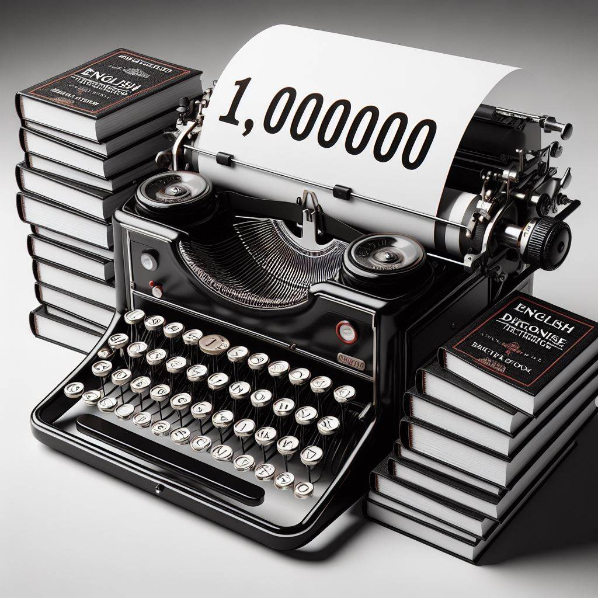
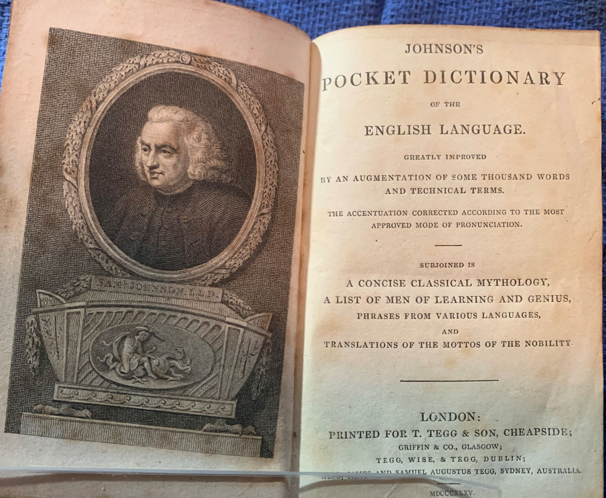
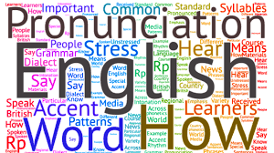
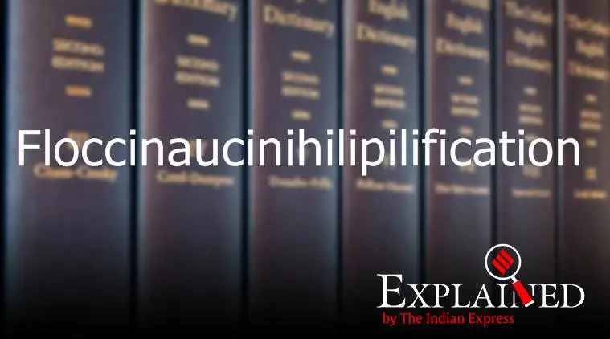

En este apartado vas a encontrar diferentes datos interesantes y
llamativos sobre la lengua inglesa

El inglés cuenta aproximadamente con 1.000.000 palabras
Para que te hagas una idea el castellano cuenta con 88.000
palabras según la RAE. Aunque de forma oficial, en los
diccionarios británicos solamente encontrarás 350.000. Sin
embargo, en su día a día, el hablante promedio no utiliza más de
2.800.

El ingles no cuenta con su Real Academia
Es la única lengua importante que no tiene su Real Academia, no
dispone de una organización que vele por ella, en oposición a la
Académie Française, la Real Academia Española y la German Rat für
deutsche Rechtschreibung. Estas organizaciones son responsables de
controlar la evolución de sus respectivas lenguas en términos de
uso, vocabulario y gramática.
Mayor hablantes del ingles
Estados Unidos es el país que cuenta con mayor número de hablantes
de inglés. En segundo lugar se encuentra la India, siguiéndole
Pakistán y Nigeria. Reino Unido queda relegado al quinto puesto.
Aunque este es el país donde mayor porcentaje de la población
habla inglés.
El simbolo &
El símbolo & (que se conoce como ampersand) procede del latín, en
este idioma la letra Y se escribe Et. Los monjes de la época
tendían a escribir en sus manuscritos estas dos letras bastante
juntas; de tal manera que formaban un dibujito similar al de la
ampersand actual.

Cambio de significado
Existen varias palabras que han ido cambiando su significado, por
ejemplo awful (actualmente, terrible) que significaba algo
maravilloso capaz de inspirar. El adjetivo nice (bonito,
agradable), quería decir tonto anteriormente.

La palabra mas larga del ingles
Podríamos decir que la palabra más larga del inglés fuera de los
términos médicos es
"floccinaucinihilipilificationa- floccinaucinihilipilification". Se refiere al acto de minimizar algo o restarle valor.